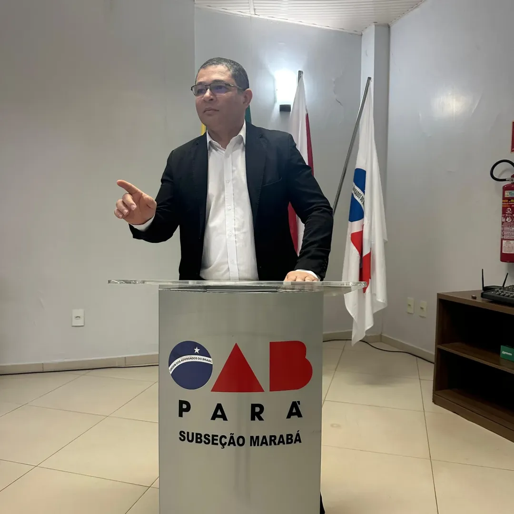
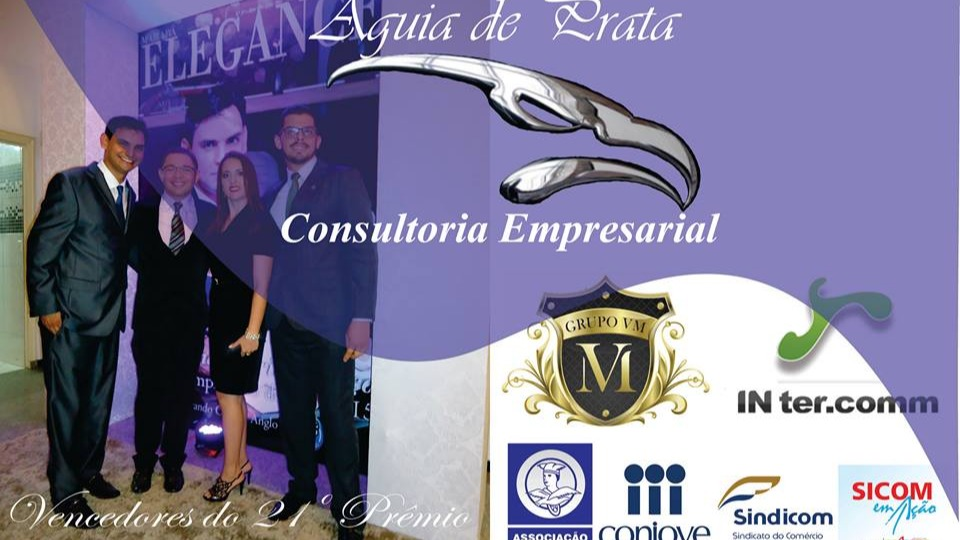
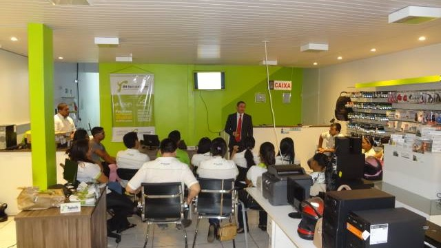
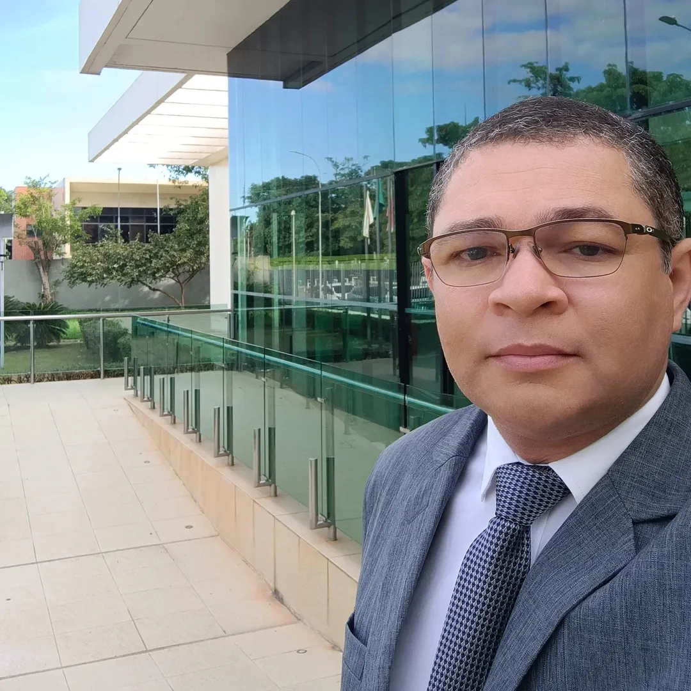

Correspondente Jurídico · Estagiário OAB/PA · Marabá
Diligências, Audiências, Protocolos, Despachos e Apoio Processual com agilidade, comunicação eficiente e compromisso com prazos. Atendimento para advogados, escritórios de advocacia, empresas e departamentos jurídicos de todo o Brasil.

Autos nº 0000001-26.2026.8.14.0028 · Qualificação
Com mais de 20 anos de experiência em comunicação, marketing digital,
tecnologia, inteligência artificial e desenvolvimento estratégico, unimos visão digital à formação jurídica para oferecer apoio operacional,
correspondência jurídica e soluções inteligentes para advogados, escritórios e departamentos jurídicos que precisam se atualizar sem abrir mão da ética, da segurança e da técnica profissional.
Atuação como correspondente jurídico e estagiário de Direito regularmente inscrito na OAB/PA. Os serviços jurídicos prestados não incluem atos privativos da advocacia.
Autos nº 0000002-26.2026.8.14.0028 · Histórico profissional


Tecnologia aplicada à rotina jurídica, com foco em produtividade, organização e atendimento eficiente.
Auxiliamos advogados e escritórios na implementação de soluções de Inteligência Artificial para otimizar processos internos, automatizar tarefas repetitivas e fortalecer a comunicação com clientes, sempre respeitando as normas éticas da advocacia e a proteção de dados.
Assistentes virtuais personalizados para WhatsApp, sites e canais digitais.
Organização inteligente de documentos jurídicos.
Implementação de ferramentas que auxiliam a rotina jurídica.
Capacitação prática para utilização responsável da Inteligência Artificial.
Mais do que implantar ferramentas, desenvolvemos soluções adaptadas à realidade de escritórios de advocacia e departamentos jurídicos, buscando aumentar a eficiência operacional sem substituir a análise técnica e a atuação profissional.
Áreas de atuação
Cada área abaixo carrega o andamento de um processo real — porque é assim que enxergamos cada serviço: do protocolo à entrega.
Processo nº 0000003-26.2026.8.14.0028
Atuação presencial em Marabá/PA

Processo nº 0000004-26.2026.8.14.0028
Posicionamento para advogados, escritórios e empresas
Processo nº 0000005-26.2026.8.14.0028
Sites e sistemas otimizados
Processo nº 0000006-26.2026.8.14.0028
Captação de clientes qualificados
Processo nº 0000007-26.2026.8.14.0028
Conteúdo com edição profissional
Processo nº 0000008-26.2026.8.14.0028
Planejamento e organização completa
Despacho
Um único profissional. Diversas soluções.
Enquanto a maioria oferece apenas um serviço, você conta com alguém que une conhecimento jurídico, estratégia de marketing, comunicação e tecnologia sob a mesma responsabilidade. Quem chega buscando uma diligência pode sair com um site, uma campanha ou uma identidade visual — e quem chega pelo marketing pode descobrir, mais tarde, que também precisa de apoio jurídico em Marabá.
Contato
Conte o que precisa — diligência, site, campanha ou consultoria — e o retorno vem em até 1 dia útil.
Protocolos, audiências, certidões e acompanhamento processual em Marabá/PA.
Solicitar diligênciaSites, tráfego pago, conteúdo ou identidade visual para sua marca ou escritório.
Solicitar orçamento